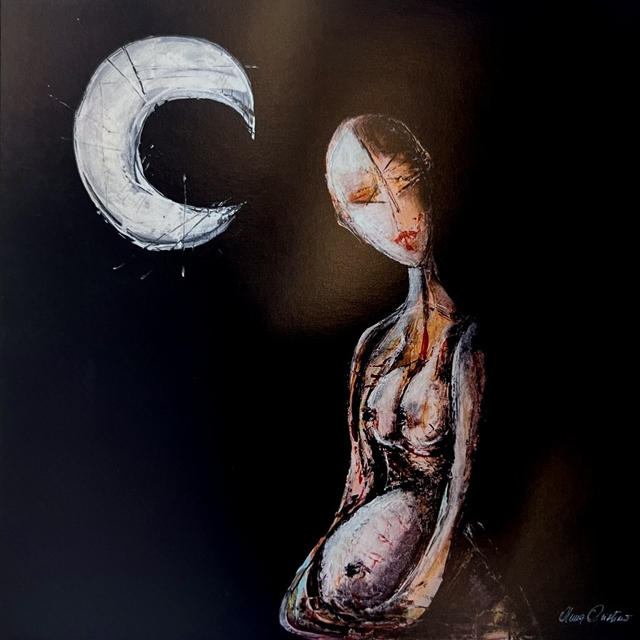
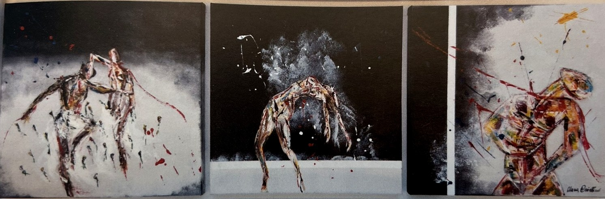

Emozioni e sentimenti, con tratti umani
L’innocenza, il conforto, la paura: Anna Cristino dà vita ai sentimenti personificandoli con tratti umani particolarmente rappresentativi.
L’innocenza, il conforto, la paura
Anna Cristino ritrae spesso i sentimenti e li personifica con tratti umani particolarmente rappresentativi. Sono soggetti che destano sempre stupore e curiosità.
Legami, amori, maternità
Le relazioni tornano anche nei titoli delle opere: «Legami», «Amanti», «La Costruzione di un Amore», «Maternità». Figure sospese a fili rossi, corpi che si abbracciano, una figura accanto a una falce di luna.
Passione e dono
Accanto alla paura e all’innocenza, le sue tele raccontano la passione e il dono. Sono emozioni che tornano anche nei volti di donna e, in forma più libera, negli astratti e nelle marine. La tecnica resta la stessa: acrilico su tela, con la spatola e con le mani, a strati densi, con il rosso come presenza costante.
Le opere della serie Emozioni
Clicca su un’opera per ingrandirla.





«Furore estatico»
Tre pannelli con figure in movimento tra schizzi di rosso e nebbie bianche su fondo scuro: si possono guardare insieme o uno alla volta.




Chiedi di un’opera
Per conoscere prezzi e disponibilità delle opere, o per una commissione, parla direttamente con l’artista.